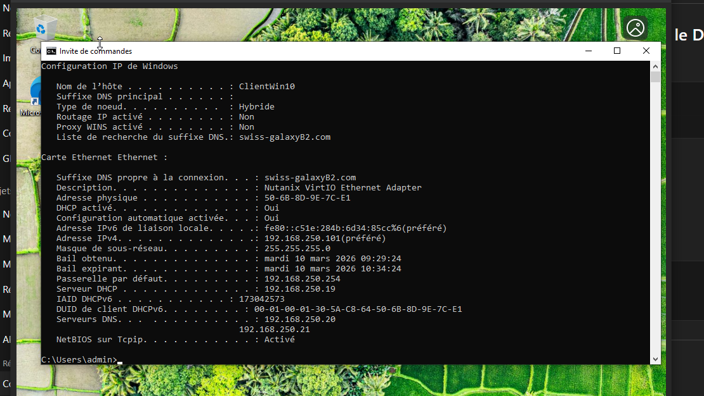

Contexte
Objectif de la mission
Après la segmentation réseau et la configuration du pare-feu, l’objectif était de mettre en place une base serveur permettant de gérer les utilisateurs, les postes et les services réseau internes.
Problème
Besoin identifié
L’entreprise devait éviter une configuration manuelle poste par poste et centraliser la gestion des comptes, des noms de machines et des paramètres réseau.
Solution
Réponse technique
Installation d’un serveur Windows Server, ajout des rôles AD DS, DNS et DHCP, puis validation depuis un client Windows connecté au réseau GSB.
Réalisation
Étapes principales
Préparation du serveur
Configuration IP fixe du serveur, nommage cohérent et vérification de la connectivité avec le réseau interne.
Installation d’Active Directory
Ajout du rôle AD DS, promotion du serveur en contrôleur de domaine et création du domaine interne GSB.
Configuration DNS
Mise en place du DNS intégré à Active Directory afin d’assurer la résolution des noms du domaine et des machines internes.
Configuration DHCP
Création d’une étendue DHCP, définition de la passerelle, du DNS et des paramètres distribués aux postes clients.
Tests client
Validation de l’obtention d’une adresse IP, test de résolution DNS et vérification de l’intégration possible au domaine.
Services configurés
Synthèse technique
| Service | Rôle | Validation |
|---|---|---|
| Active Directory | Gestion centralisée des utilisateurs, groupes et postes | Domaine disponible et contrôleur opérationnel |
| DNS | Résolution des noms internes du domaine | Résolution validée depuis le serveur et le client |
| DHCP | Attribution automatique des paramètres réseau | Bail obtenu par un poste client |
Compétences BTS
Compétences démontrées
- Installer, tester et déployer une solution d’infrastructure réseau.
- Exploiter et administrer un service réseau Windows.
- Mettre à disposition des utilisateurs un service informatique.
- Vérifier le fonctionnement par des tests techniques.
Outils
Environnement utilisé
- Windows Server 2019
- Active Directory Domain Services
- DNS Manager
- Console DHCP
- Client Windows de test
Preuve
Validation DNS
La capture ci-dessous sert de preuve technique pour la partie DNS de la mission.

Conclusion
Bilan
La mission 3 complète l’infrastructure GSB en ajoutant les services centraux nécessaires à un environnement professionnel : annuaire, résolution de noms et distribution automatique de configuration réseau.